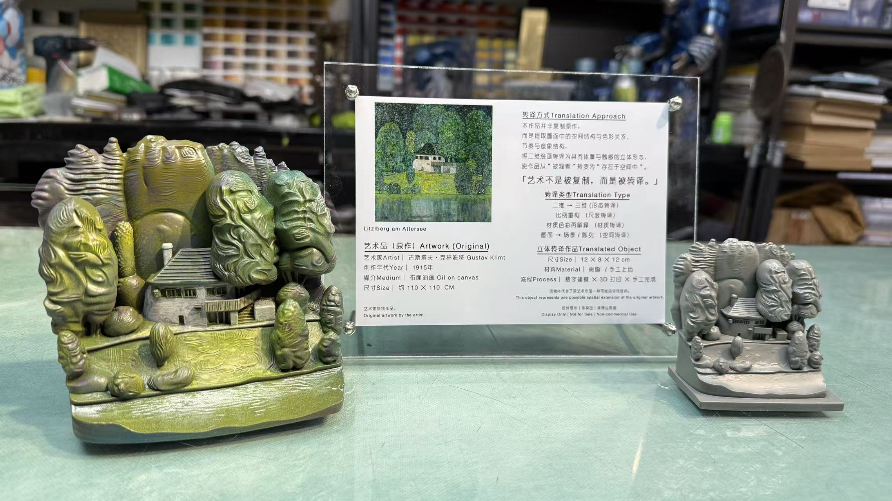
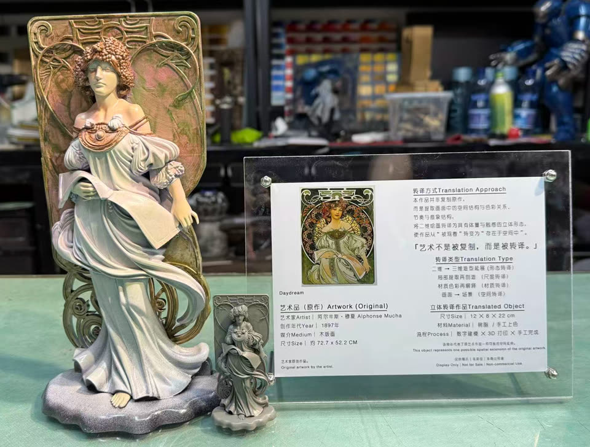
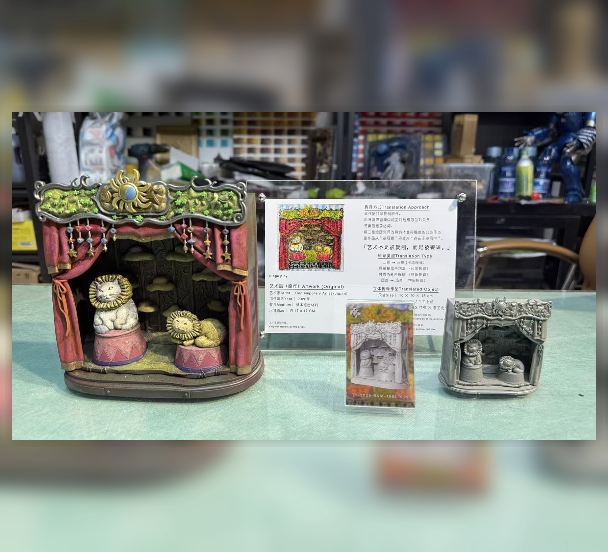
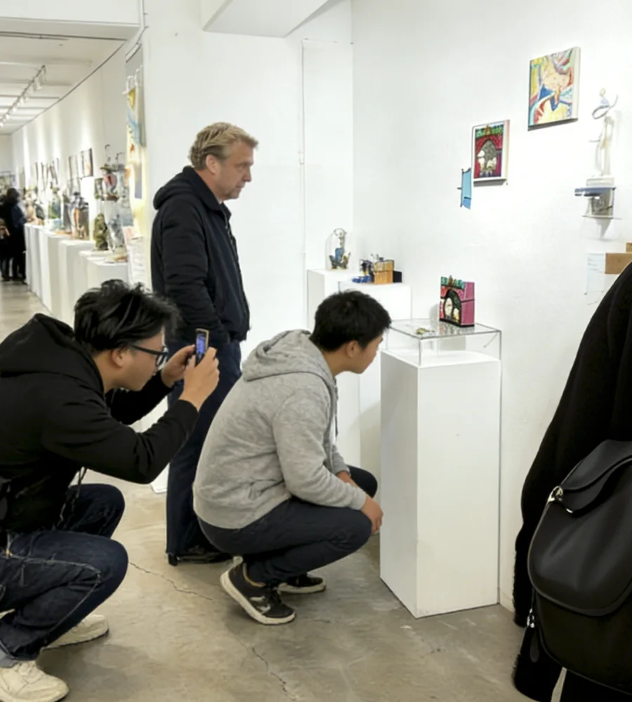

01 / TRANSLATION
一件作品，如何进入空间。
横向滑动或点选阶段，查看原作如何成为可持续使用的内容资产。
01 / ORIGINAL
保留作品图像、尺寸、来源与语境，作为所有结构判断和授权记录的起点。
02 / INTERACTIVE WORKS
直接操作，而不是只看介绍。

03 / REAL DELIVERY
从原作到展览，一件真实作品的完整路径。

- 原作尺寸
- 17 × 17 cm
- 转译方式
- 同尺寸结构转译
- 项目周期
- 4 天完成沟通、制作与寄达

04 / NEXT STEP
从一件作品开始。
先提交作品和用途，我们会判断它是否适合进入结构转译、实体制作或数字档案流程。
提交作品判断